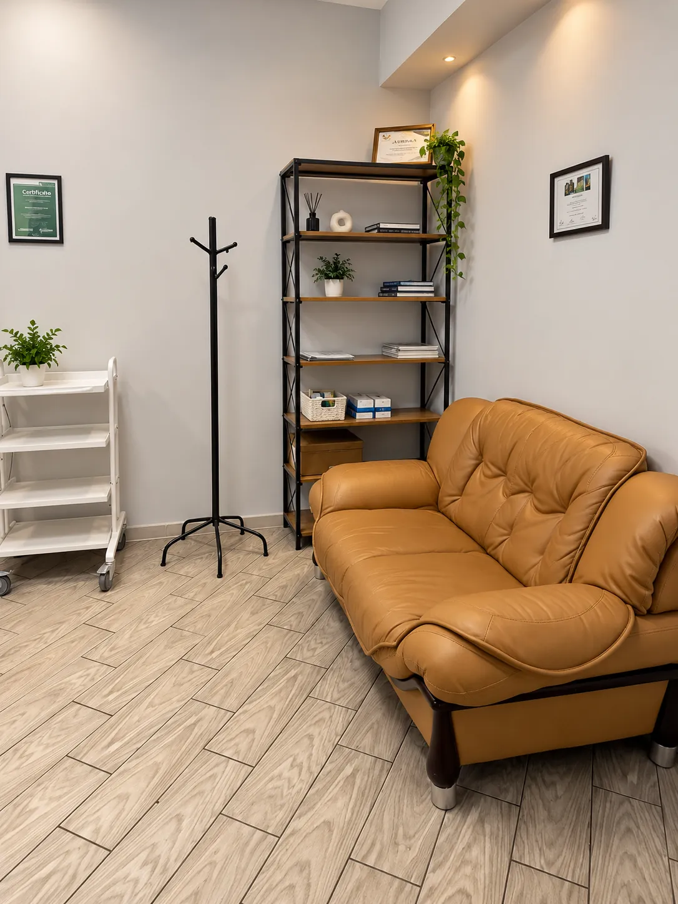
Консультации
Неврология
Головная боль, боль в спине и шее, головокружение, онемение рук и ног.
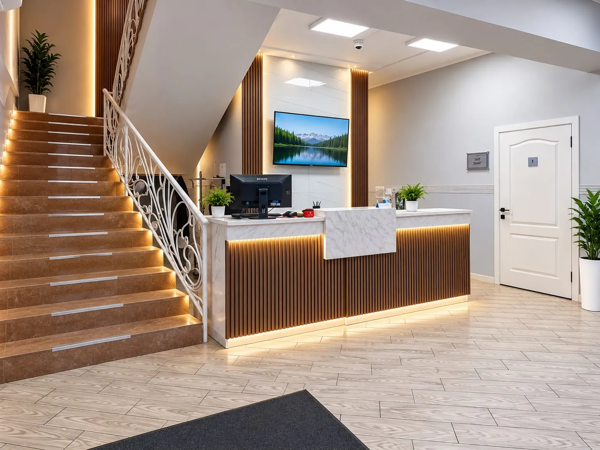
Первичный приём, диагностика и восстановление в одной клинике. Врач выяснит причину боли и составит план лечения.
Расскажите, что беспокоит. Врач выслушает, проведёт осмотр и объяснит, что делать дальше. Готовое МРТ для записи не нужно.
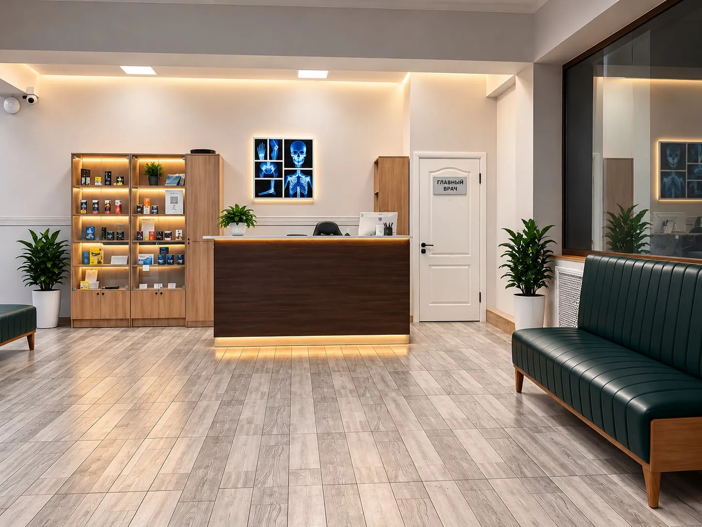
Стоимость первого приёма. Инструментальная диагностика оплачивается отдельно.
Врач подберёт их по вашим показаниям.
Жалобы, история здоровья и вопросы, которые давно хотелось задать.
Врач оценивает состояние прямо на консультации.
Что можно сделать сейчас и какие обследования могут понадобиться.
Дальнейшая диагностика и лечение, расписанные по шагам.
Начните с консультации невролога или сразу запишитесь на исследование и занятия.

Головная боль, боль в спине и шее, головокружение, онемение рук и ног.
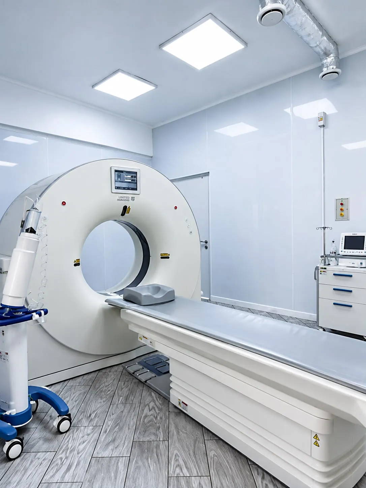
Занятия лечебной физкультурой с инструктором.

Неврологи, реабилитологи, рефлексотерапевт, ревматолог, терапевт и врач УЗИ. Выберите врача и запишитесь через WhatsApp.
Главный врач, невролог
Невролог и терапевт. Окончил КазНМУ им. С. Д. Асфендиярова с красным дипломом и резидентуру по неврологии. С 2013 года работает в нейроинсультном отделении ГКБ № 7.
Невролог
Невролог и терапевт со стажем 10 лет. Диагностика и лечение заболеваний центральной и периферической нервной системы, болей в спине и позвоночнике с неврологическими симптомами. Работала в скорой помощи и в ГКБ № 4, преподаёт в КазНУ им. аль-Фараби. В Neurolab Plus с 2024 года.
Медицинский директор, реабилитолог I категории
Спортивный врач и реабилитолог. Лечение и реабилитация после ортопедических и травматологических операций, восстановление после инсульта. Врач мужской национальной сборной Казахстана по боксу, преподаёт спортивную медицину. Стажировался в Чехии, Литве и Barça Innovation Hub.
Врач-реабилитолог, физиотерапевт
Восстановление после травм и операций, в том числе после переломов и эндопротезирования коленного и тазобедренного суставов. Лечение при артрозах, остеохондрозе, протрузиях и грыжах дисков. Физиотерапия, плазмотерапия и лечебный массаж для взрослых и детей.
Специалист по опорно-двигательному аппарату
Боль в спине, шее и суставах, восстановление после травм и обострений.
Рефлексотерапевт, иглотерапевт, мануальный терапевт
Учился в Синьцзянском медицинском университете традиционной китайской медицины и работал в народной больнице «Zhong Yi Yuan» в Урумчи. Иглотерапия, мануальные техники, моксотерапия, баночный массаж, гуаша и су-джок.
Врач-ревматолог
Боли и воспаление в суставах, заболевания соединительной ткани.
Врач УЗИ
Ультразвуковые исследования в кабинете УЗИ клиники.
Врач-терапевт
Приём взрослых пациентов: осмотр, назначение обследований и лечения.
Узкие специалисты принимают по графику. Подробности у администратора.
Анализы через лабораторию-партнёра. Подробности у администратора.
Сервисное обслуживание медицинского оборудования.
Независимая проверка работы клиники.
Диагностика, кабинеты врачей и зал лечебной физкультуры в одном здании на Жетысу-2.

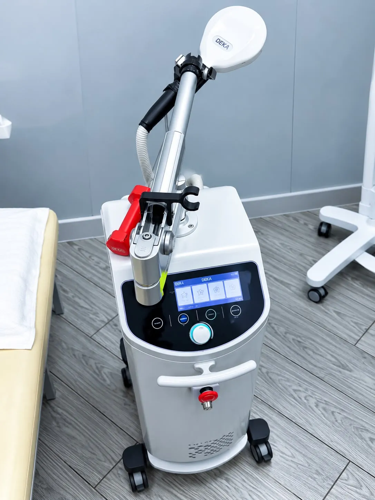
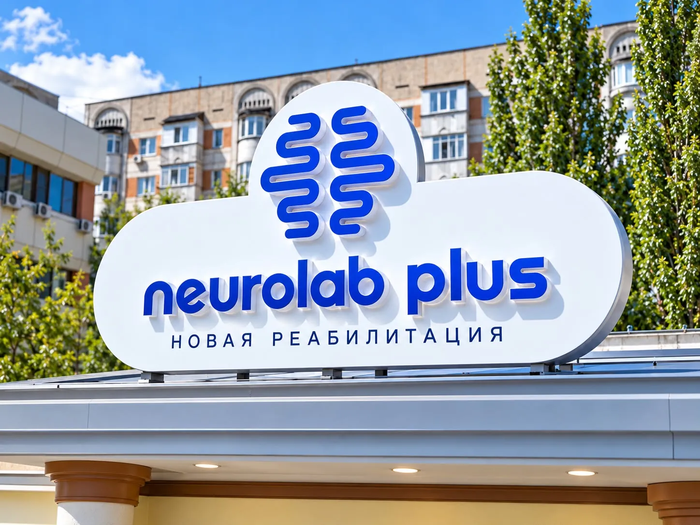

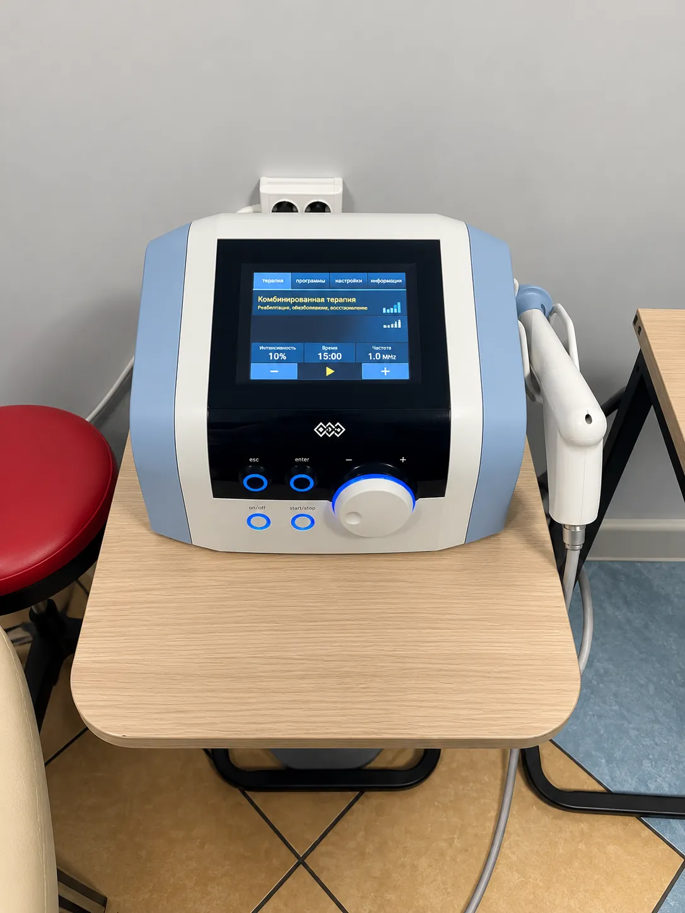
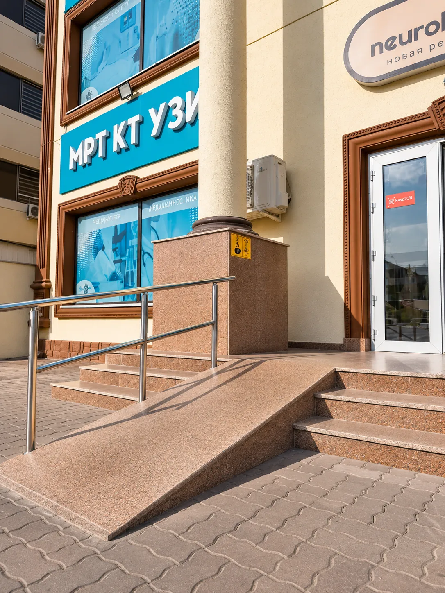
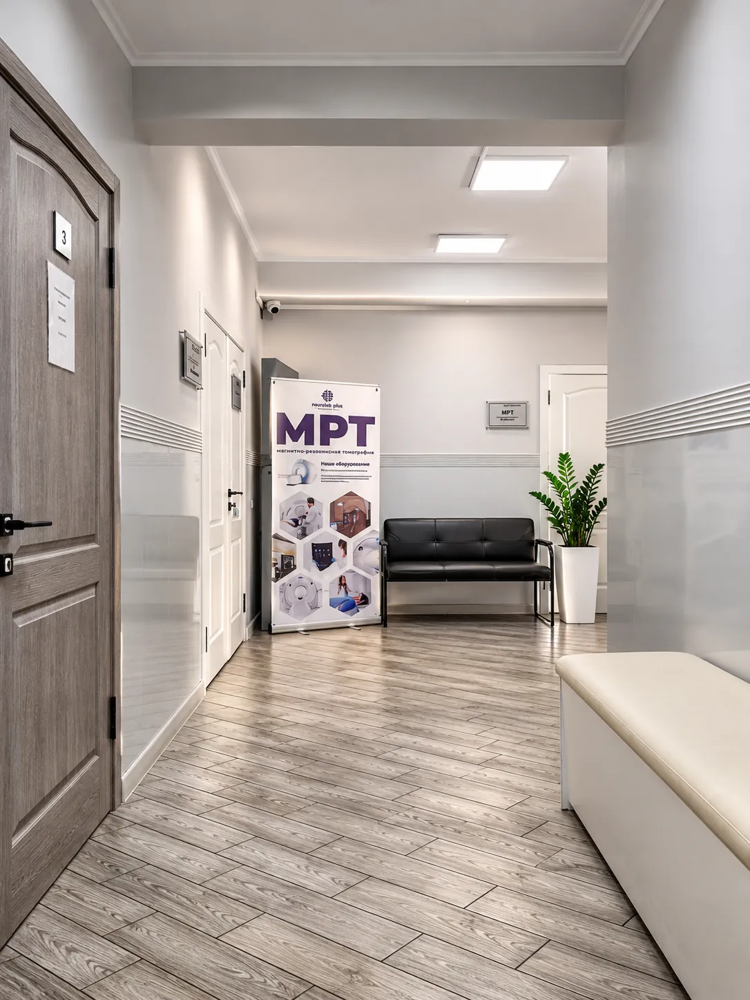
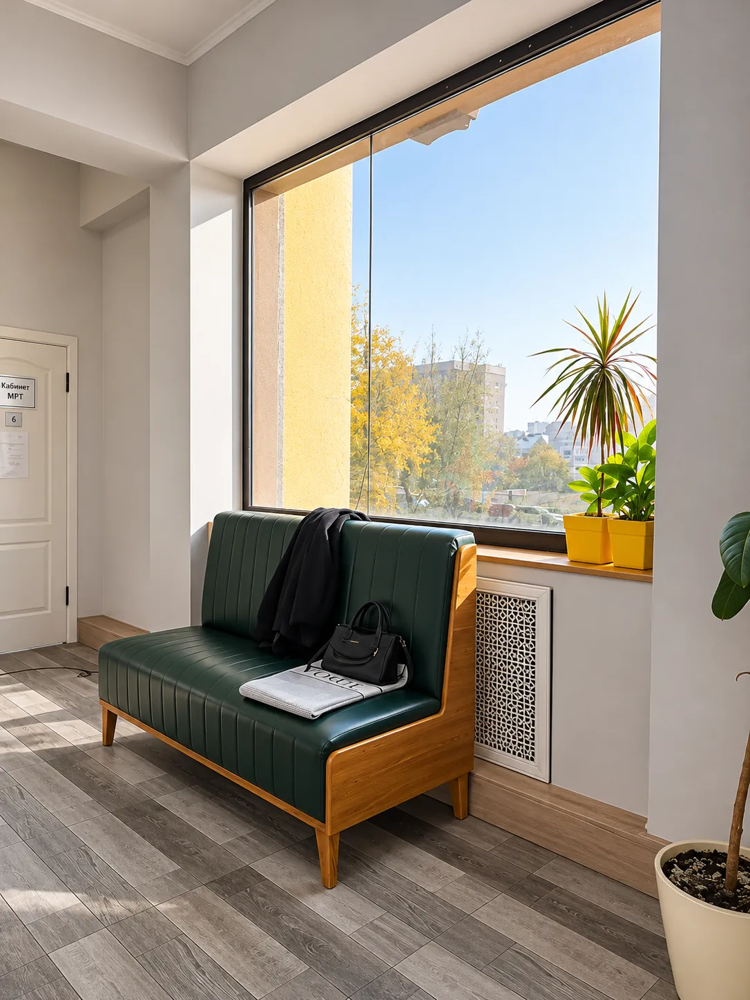
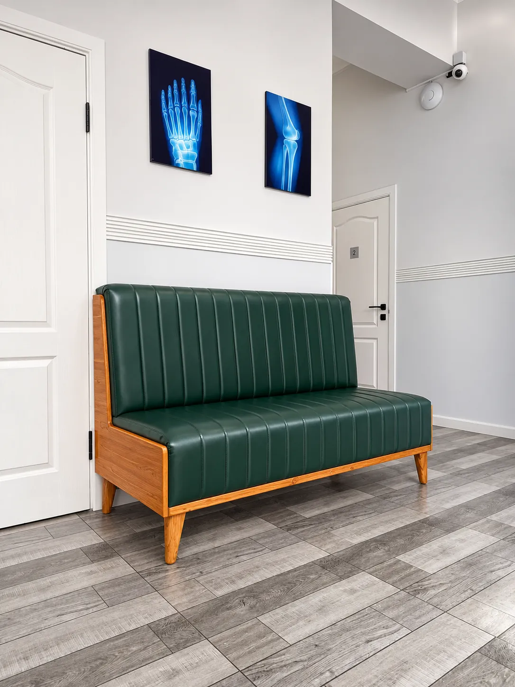
Лицензия клиники, сертификаты врачей и документы на оборудование. Выберите, что хотите посмотреть.
Выдана ТОО «Aspan Rehab Clinic-2» Департаментом Комитета медицинского и фармацевтического контроля Минздрава РК по г. Алматы.
Неврология, медицинская реабилитация (ЛФК, массаж, физиотерапия), рефлексотерапия, терапия, ревматология, травматология-ортопедия, функциональная, ультразвуковая и рентгенологическая диагностика.
Сертификаты специалистов можно проверить на портале elicense.kz.
Документация к диагностическому и медицинскому оборудованию.
Документы на оборудование можно посмотреть в клинике у администратора.
Напишите нам в WhatsApp или позвоните. Администратор подберёт удобное время приёма.
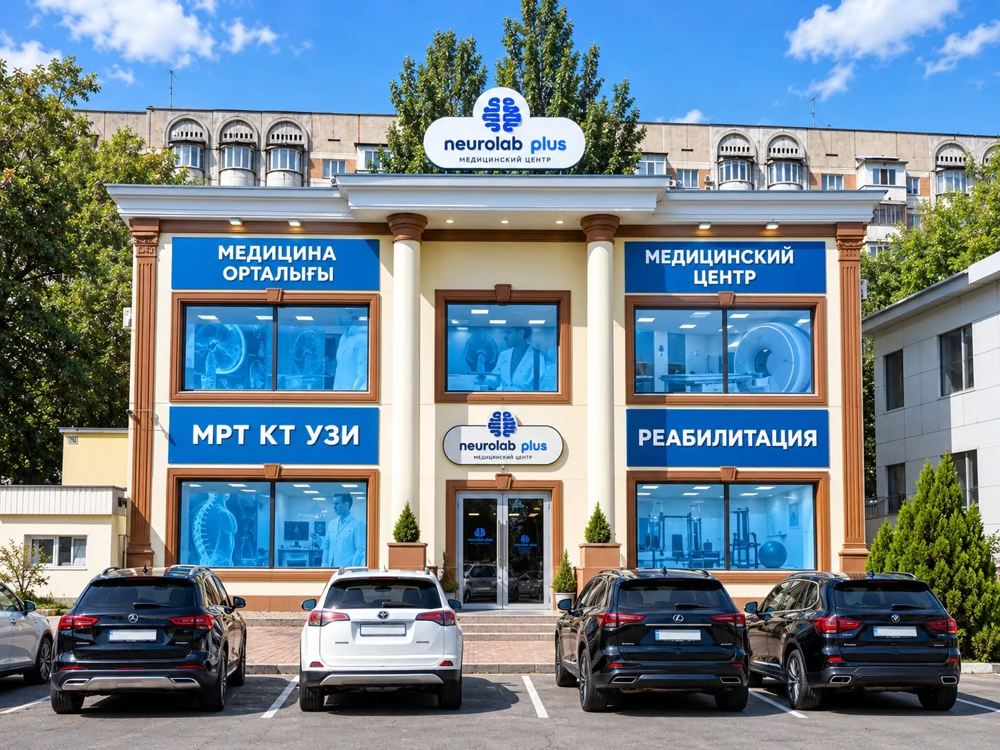
Алматы, мкр. Жетысу-2, 70Б